About Me
My name is Diana and I am currently an Associate TechOps Specialist at a company called Sojern. Besides that, I enjoy using my free time to do some programming, hang out with my loved ones, learn all sorts of new things, and travel. I decided to make this webpage just to put together some of the things that I have worked on in the past few years, as well as to share the side projects that I am currently working on.
I was born and raised in Mexico City, where I had the fortune of attending a multicultural school called La Escuela de Lancaster. This is where I completed the International Baccalaureate diploma as well as the National Autonomous University of Mexico (UNAM) CCH program (Humanities and Science School). In 2013, I moved to California for university and, in June of 2017, I graduated from the University of California, Santa Cruz (UCSC) with a B.S. in Computer Science and a Minor in Mathematics.
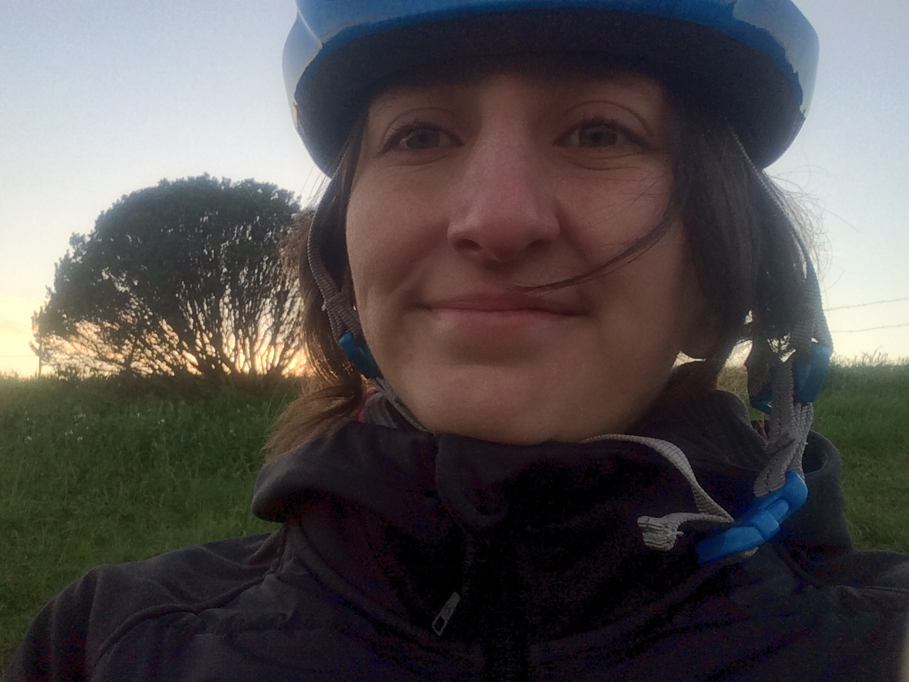Current Projects
Purposeful
I am collaborating with my friends Oscar Parra and James Kennedy to start-up a new web-based project called Purposeful. This project seeks to facilitate mentorships across people who want to gain skills in a certain area, and people who already have those skills. The project will also provide a plataform for teams to be formed in order to develop interdisciplinary projects. The MVP (Minimum Viable Product) for the Purposeful platform is currently under construction and I will be sure to post a link to it here when it comes to life.
McGehee Tree
I am working with Connor Jackman to make a Python program that can plot a tree that results from the recursive iteration of the function $$f(z) = z - \overline{z}^2$$ Where \(z = x + iy\) is a complex number (and \(\overline{z} = x - iy\) is its conjugate).
That is, for every \(z_0 \in [0,1]\) we recursively find all the branches of the equation $$z_i = z_{i+1} - \overline{z}_{i+1}^2 = f(z_{i+1})$$ For \(1 \leq i \leq n\), where \(n\) is a chosen number of finite iterations to approximate what happens in infinity. Notice that the number of seeds would also need to be infinite, but for the purpose of plotting the tree we use a finite number of seeds by dividing the interval \([0, 1]\) in equal chunks and using the dividing points as seeds.
We used the Newton method to approximate roots of non-linear equations and exploited the symmetries of the expected graph to generate a faster plotting. Below is shown the plot for two iterations. However, we still need to fix some details for when there is a large number of iterations.
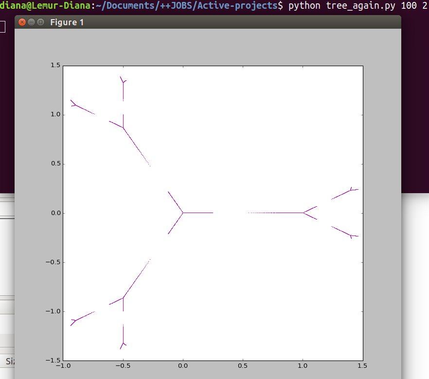Past Projects
Pilar Medina: Analogia y Escritura
I worked on this project with Intton Godelg in the Summer of 2015. We were hired by Alejandra Medellin and Dolores Ponce to create a visualization of their research on the dancer and choreographer Pilar Medina. Intton did most of the design and some of the programming, while I did some of the design and most of the programming. It was a fun experience.
I made this poster for my Technical Writing final project at UCSC on Winter quarter 2017. It went along with a research report I wrote about Convolutional Neural Networks and how they are used for Image Captioning. I enjoyed to learn about these topics a lot and hopefully I get to learn much more about them in the future.
Math Problem Solving Portfolio
I put this portfolio together in Fall 2016 as a final project for my Mathematical Problem Solving class at UCSC. The class was an upper division elective that I took to complete my mathematics minor. It was really fun and it made me feel motivated to participate in the Putnam exam that year, which was very challenging but also very fun.
Random Bipartite Graph (Java)
Once while at UCSC, a professor recommended me to read a bunch of notes on "statistical physics for communication and computer science" written by Nicolas Macris and Ruediger Urbanke. Later on I realized that these notes were actually lecture notes for a class at the Ecole Politechnique Federale de Lausanne in Switzerland. This little Java program is a solution to the first question in the first homework I found in that class' webpage. Someday if I have time I might try to solve more of those problems.
TicTacToe
I created this TicTacToe game just for fun using Processing. The one here is a very tiny version, but the code is scalable to make it any size you want. I never enabled the "new game" button, so right now the only way to start over is to refresh the whole webpage.
3D Modells and Animations
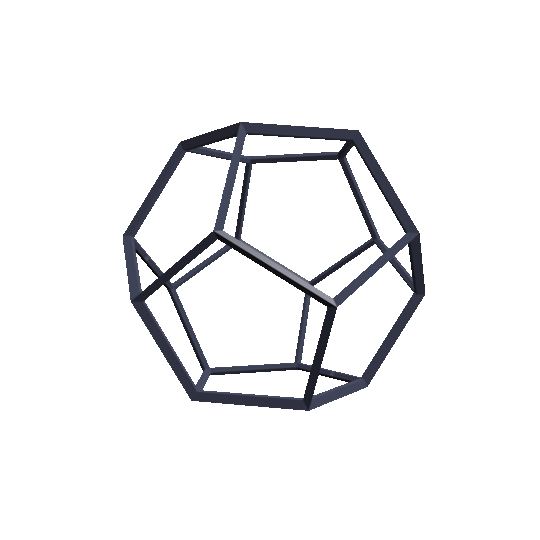I collaborated with Intton Godelg to create this animation in October 2015. We submited it to the UNAM short animation film contest that year, but it did not win. I still think it is a great animation and I am proud to have been part of it. Specifically, I worked on modelling and rigging, and taught Intton how to do the cell fracturing for when the things break. We used Blender.
3D Animation Class (UCSC-CMPM 26)
These are a series of excercises I made for my 3D Animation Class in Spring 2015, hopefully some day I will give myself time to make something more elaborate.
Crab Walk Cycle - This is one of my favorite models.
Motion Capture and Rigging - This one is actually me jumping around in a MoCap studio, I was pretty proud of it but now I see her poor arms were a little twisted.
Expressions and Sounds - This one is very strange and a little creepy, buy I like it.
Rigid Body Breaking - A small tribute to Rene Magritte, it uses "La Corde Sensible" as a background, and depicts the familiar Magritte apple ("Le Fils de l'Homme", "La Chambre d'Ecoute", etc.) flying through the sky and breaking a glass tinted by "La Clef des Champs". This "window" contains the graffiti 'This is not a window', making reference to the famous piece "La Trahison des Images".

(Images appear in the order they were mentioned).
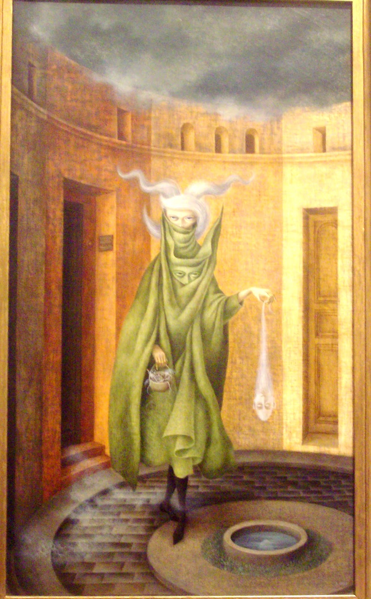
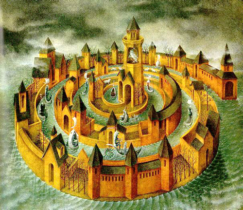
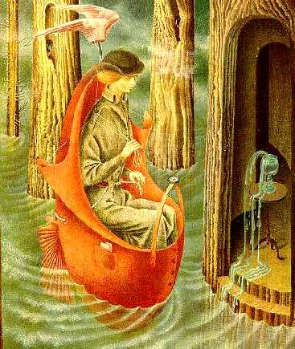
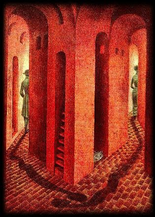
 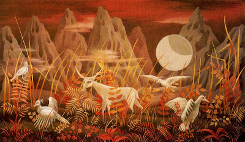
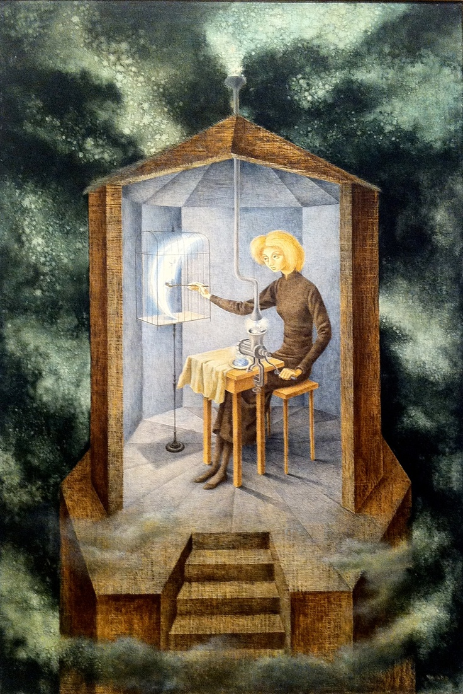
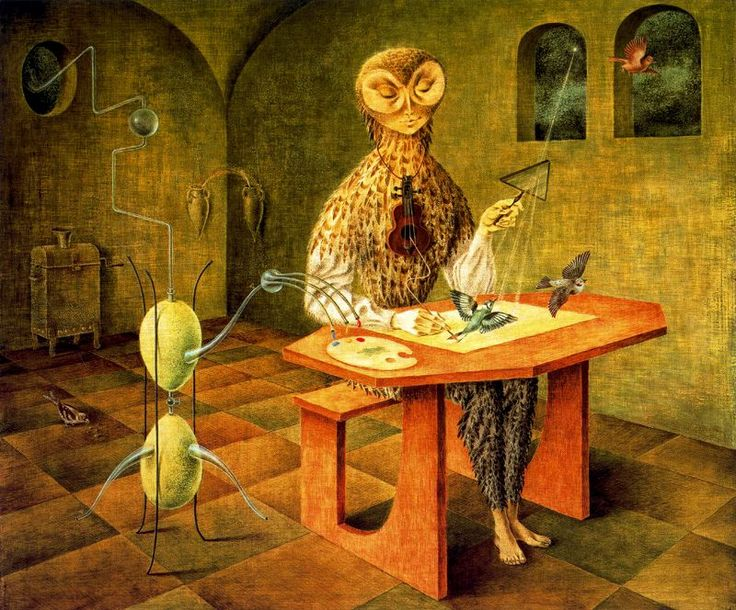
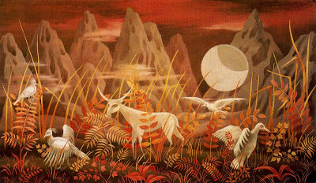
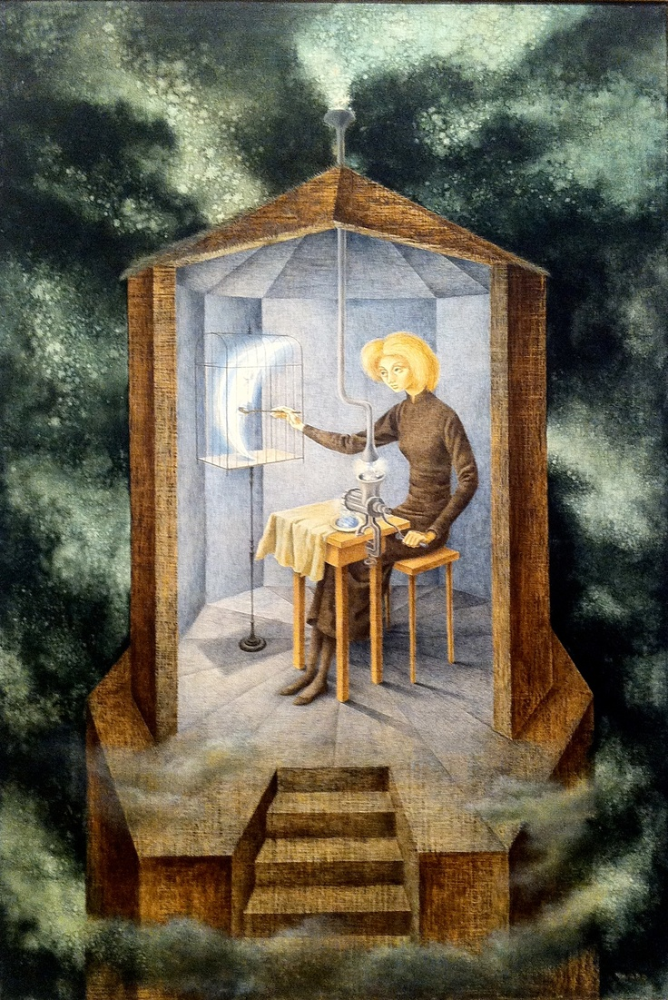
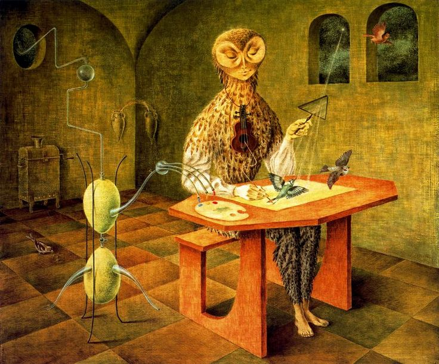
(Images appear in the order they were mentioned).
Final Project!! - Since I was already in the surrealist mood, I decided to make my final project to be a tribute to Remedios Varo. The character is supposed to resemble "Mujer Saliendo del Psicoanalista". Throughout the animation, this fantastic character travels though "Transito en Espiral" on board of a boat from "Exploracion de los Recursos del Rio Orinoco". In each of the windows of the spiral, we can see different scenes inspired by some of the paintings of the artist, such as "Despedida", "El Paraiso de los Gatos", "Valle de la Luna", "Papilla Estelar", and "La Creacion de los Pajaros".
Other models
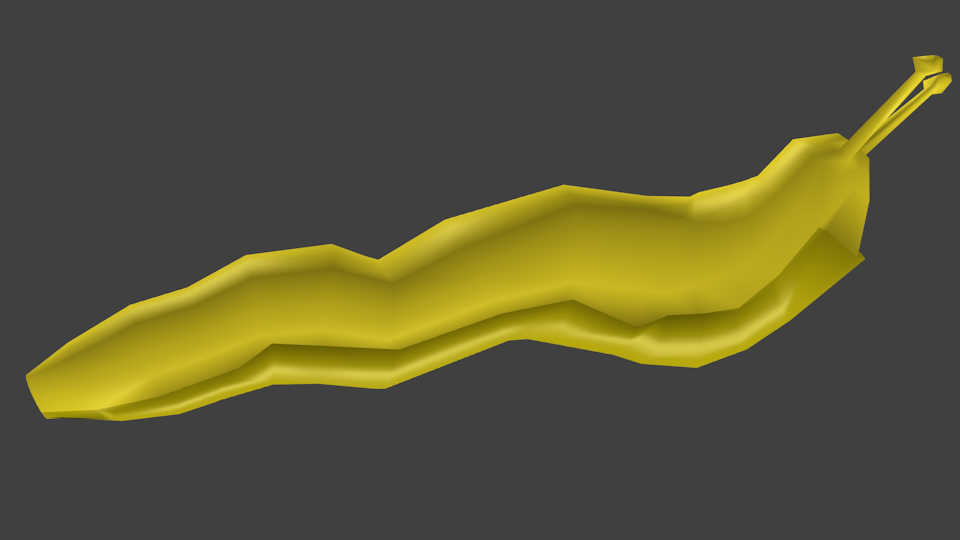Banana Slug!!
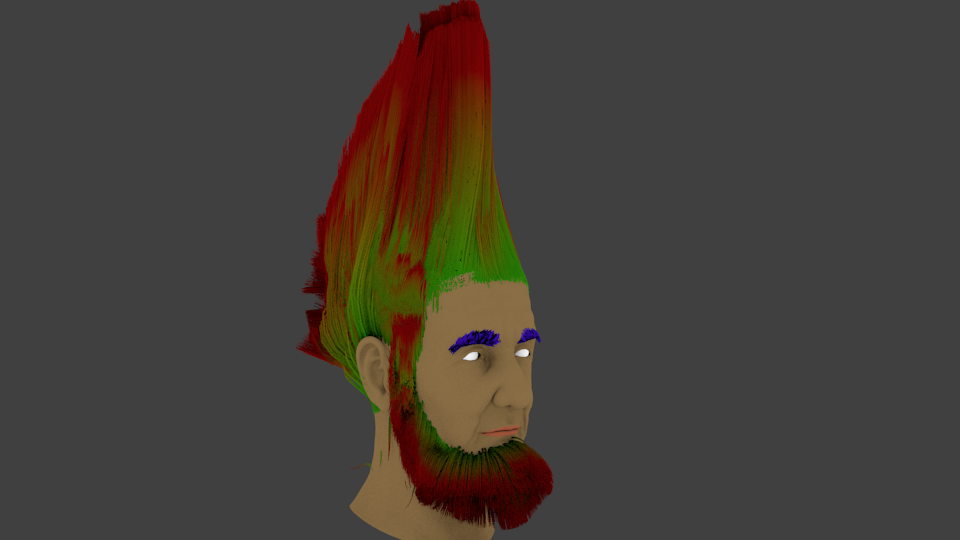Crazy hair excercise (I did not model the face, just the hair).
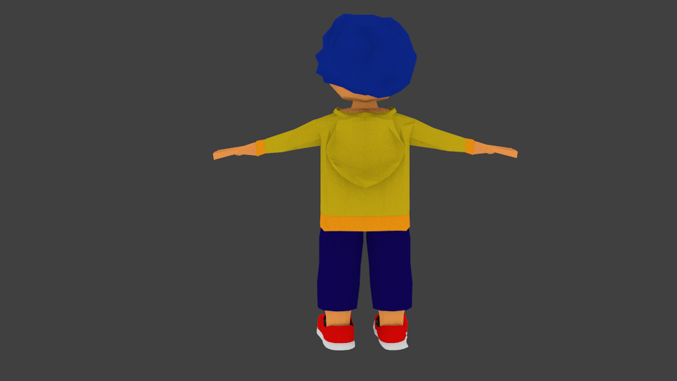 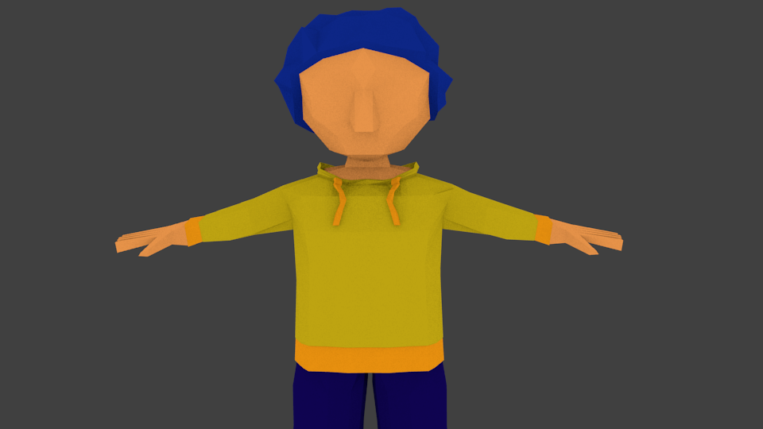 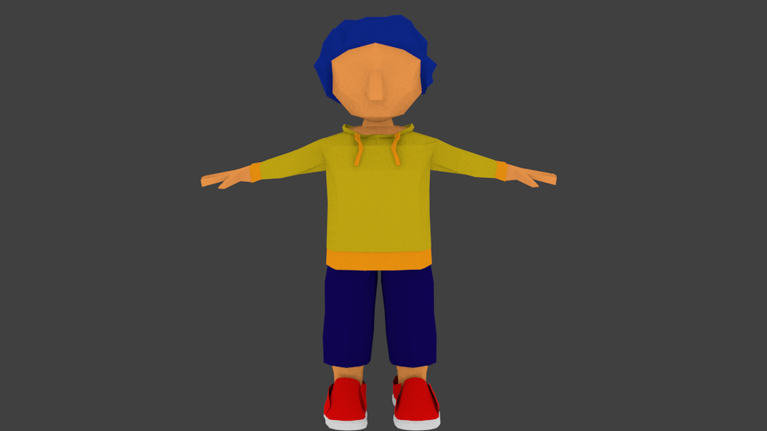 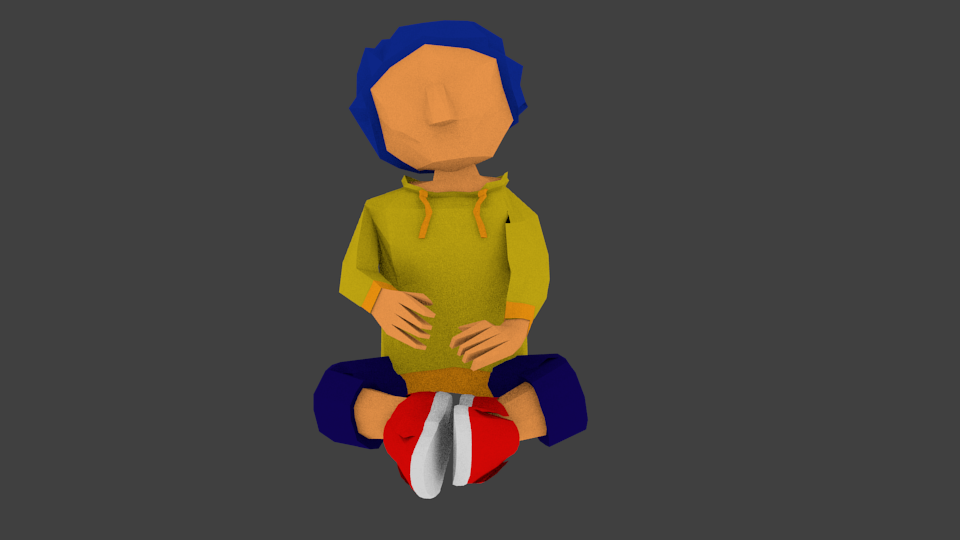These are the controller and the car he would have been playing with.
This was my final project for the 3D modelling class (UCSC-CMPM 25) I took in Fall 2014. I modelled everything seen in this gif, inspired by the Coyoacan plaza , which is in the area of Mexico City where I am from.

Conferences
Attended
Society of Women Engineers (SWE) Regional Meetings Seattle, Washington 02/2016
American Mathematical Society (AMS) Sectional Meetings Denver, Colorado 10/2016
Fun Stuff!
All of these are not of my authoring but I still think they are fun :)
6-color graph coloring!! This is one of my favorite proofs. I also really like that the 4-color proof because it was the first computer assisted proof in history, and I think that is exciting.
A Dark Room Fun text-based game.
Zen Pencils Cool inspirational comics.
Backyard Worlds Help search for planet 9!!
El Diablo de los Numeros This is a great children's book that explains some complex mathematical concepts in really simple ways.
The Useless Web Just because.
Mandelbrot Set Yaay fractals.
Social Justice
I have been part of these
Here are some links to Social Action projects I have been part of throughout my life. I am currently not actively working with any of them, but they still form a very important part of who I am and how I choose to live my life. I only put links to the projects that actually have webpages, but I have been involved in many other projects, both small and large.
Amnesty International (A.I.)- Along with a few other students from La Escuela de Lancaster we formed the first A.I. student group in Mexico. In general, my school always had a lot of social action initiatives, which is one of the reasons why I learned the importance of thinking critically and trying to make a difference.
TECHO - This project seeks to erradicate homelessness due to extreme poverty in Mexico (and other countries in Latin America). It is another one of the projects connected to my high-school, but I was not as involved with it as I was with A.I.
Integrando a Mexico - I went to this course in the Summer of 2012 and it was one of the greatest experiences in my life. I made some of the best friends I have today there, and I learned the meaning of empathy and the importance of education. I also learned how to listen actively, think critically, speak up, work in teams, and many more things. One of the biggest lessons I took from the course was that starting a project from scratch is always very hard and will almost always not turn out as planned. However, even if a project is not able to continue, this doesn't mean it failed, since you can always learn from the experience and try over and over again.
This course also has a version that brings together youth from all over Latin America (instead of just all over Mexico), it is called Empoderando a Latioamerica, but I don't think they have a webpage yet.
I like these too
These are other projects that I also find interesting and important, even if I have not had the opportunity to personally be part of them.
Girls Who Code
Slow Food
Laboratoria
Control Arms